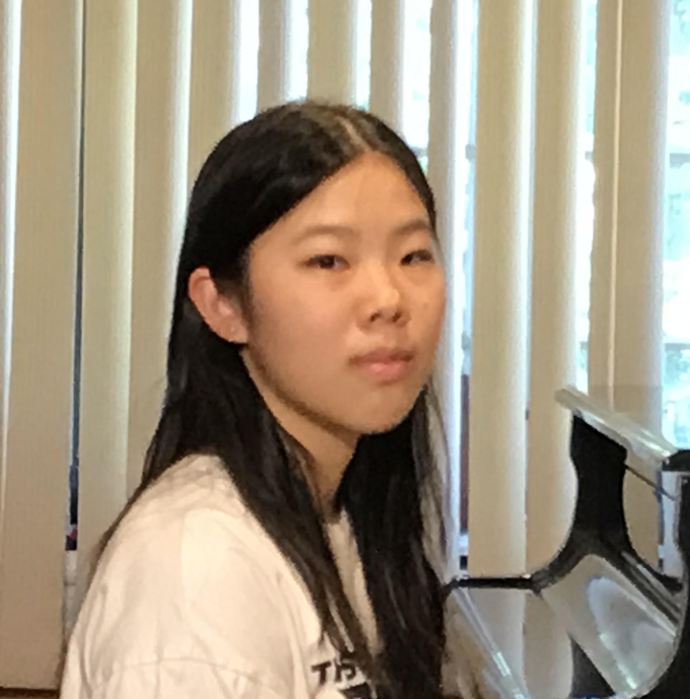
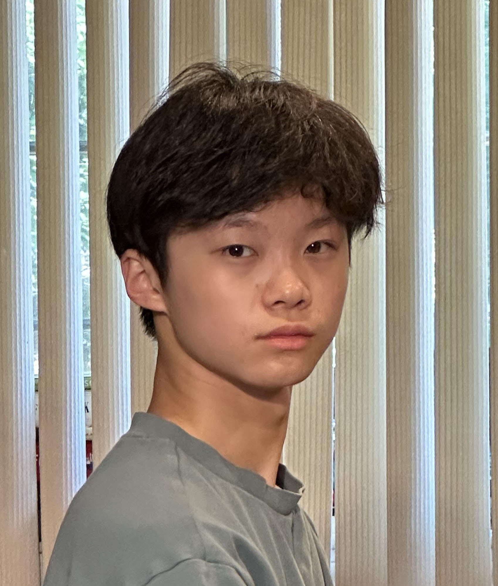
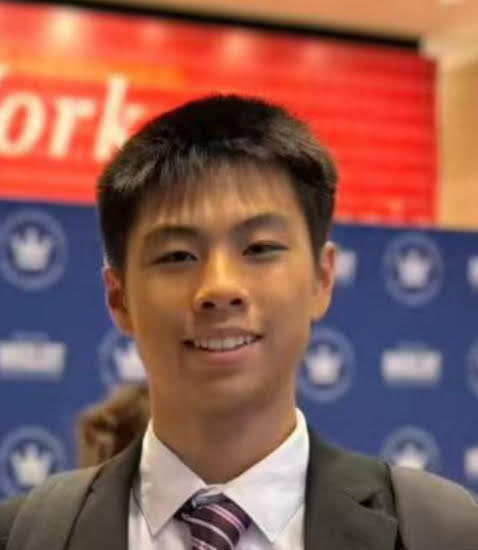
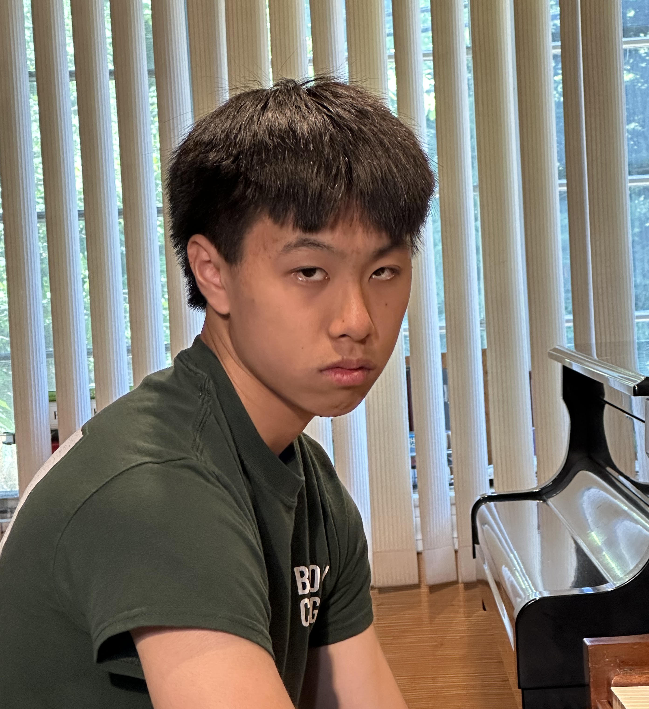
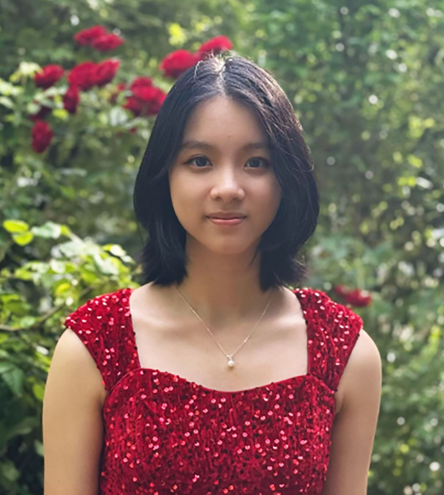
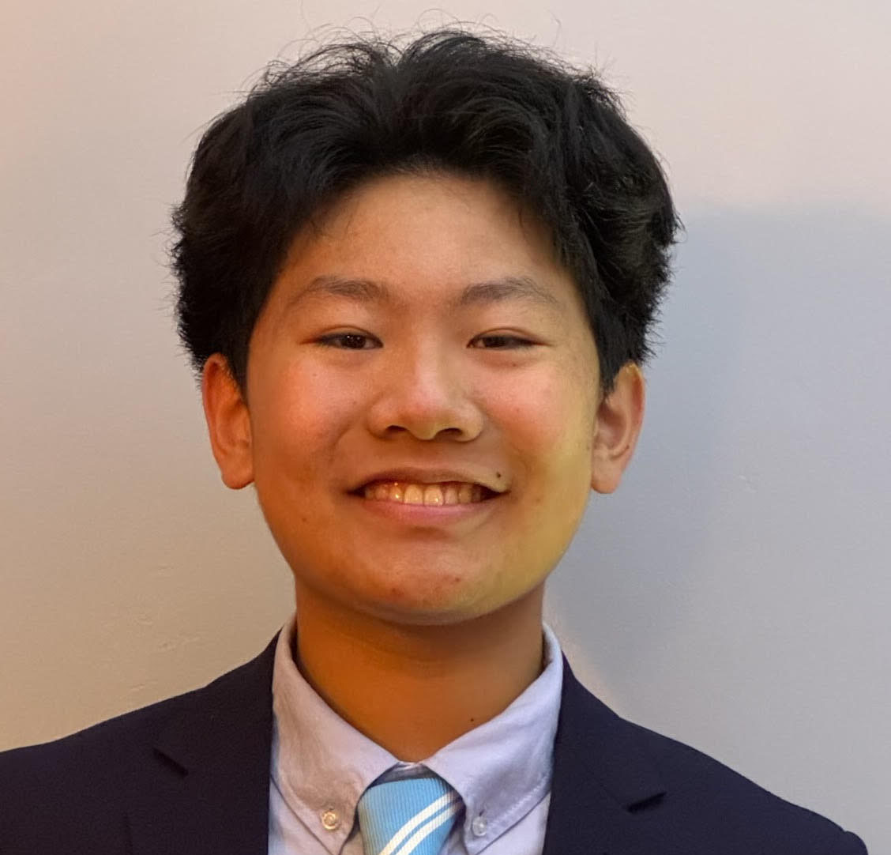
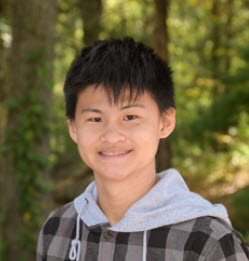
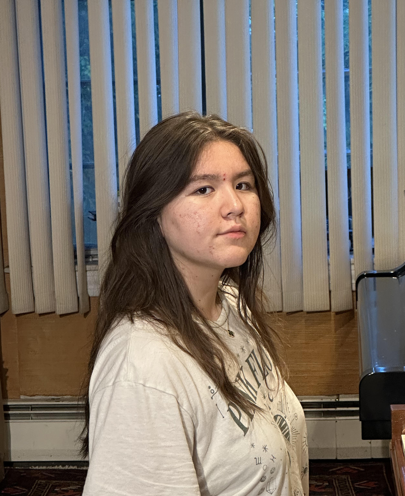
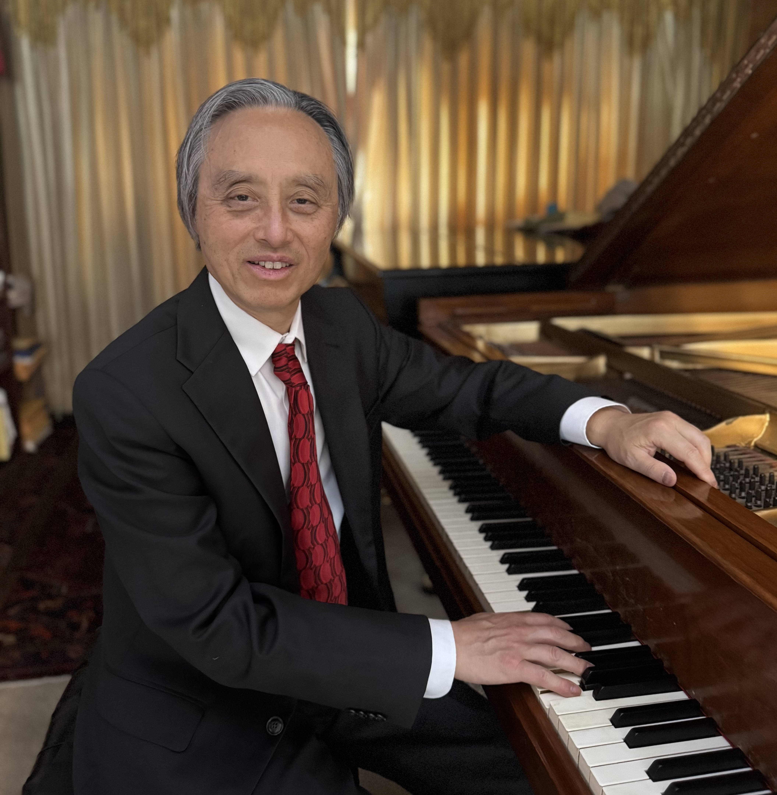

Concert Program
- 🎹 Clara Liu (16) Schumann: Fantasie in C Major, Op. 17
- 🎹 Eric Liu (16) Ravel: Le Tombeau de Couperin
- 🎹 Jayden Zheng (16) Beethoven: Piano Sonata No. 23 in F Minor, Op. 57, “Appassionata”
- 🎹 Jeffery Zheng (16) Schubert: Moments Musicaux, Op. 94
- — INTERMISSION —
- 🎹 Jolene Wong (16) Beethoven: Piano Concerto No. 3 in C Minor, Op. 37
- 🎹 Matthew Wang (16) Gershwin: Selections from Song-Book; Three Preludes
- 🎹 Roger Gao (16) Chopin: Piano Sonata No. 2 in B-flat Minor, Op. 35
-
🎹 Rufi Aili (16)
Chopin: Ballade No. 1 in G Minor, Op. 23
Sun Yiqiang: Spring Dance
Meet Our Performers

Clara Liu 刘语馨
Age 16 • Performing Schumann: Fantasie in C Major, Op. 17
Musical Journey
Clara Liu is a rising junior at Needham High School. She has been playing piano for over eight years, spending the past five with Mr. Fan Li. Under his expert guidance, Clara has rapidly grown as a pianist, earning multiple First and Second Prize awards in international piano competitions. In 2025, she received a First Prize award in the Australian International Music Competition North American Division at Harvard, and was invited to move on to the final round in Australia. Later that year, Clara received a Second Place award at the Miclot International Music Competition and performed at Lincoln Center in New York.
Physics Leadership
Driven by her passion for physics, Clara reinstated and now serves as president of Needham High School's Physics Team. This past year, she organized and led the team to make its first appearance in the international PhysicsBowl, where they competed against 572 schools and more than 11,600 students worldwide. Clara was the highest-scoring member of the team, placing in the top 6% internationally in Division I. Through the Physics Team, she hopes to promote STEM within her school and encourage more students to explore physics.
Academic Excellence & Project Experience
Clara is also greatly interested in computer science and mathematics. As a two-time American Computer Science League Senior Division Finalist, she possesses strong problem-solving and programming abilities. In freshman year, she was selected to participate in the MIT Beaver Works Summer Institute (BWSI) GWPAC Outreach Program, where she explored the software behind autonomous robotics. She has also participated in several project-based engineering programs, including the MIT BWSI CRE[AT]E Challenge, where she collaborated with a team to develop assistive technology, and the Asian American Academy of Science and Engineering Research and Product Design Competition at MIT, where her team won Second Place and received a $1,500 scholarship for their innovative project. In addition, this summer Clara was accepted into Boston University’s PROMYS Pathways, an intensive mathematics program that further strengthened her logical reasoning. Not only is Clara strong in STEM, she has also gone far in the National History Day research competition. The website exhibition that she programmed placed first at regionals and reached the state finalist level.
Community Service
Clara values using her knowledge to empower younger generations. In previous years, she has co-taught an Introduction to Python and Artificial Intelligence course at Century Chinese School. Currently, she works as a Teaching Assistant at MGenius Academy, where she mentors young students through hands-on engineering and STEM projects. Clara also volunteers as a tutor at her local library, supporting middle-school students across all academic subjects, and has accumulated over 100 hours of community service.
Additional Interests
Beyond academics, Clara enjoys oil painting recreationally. In 2026, she was recognized with a Scholastic Art & Writing Awards Silver Key for her artwork. She is also active in athletics, having competed in club volleyball for several years. Alongside her teams, Clara has earned multiple Gold and Silver tournament medals.
🎵 Tonight's Performance
Performing: Schumann: Fantasie in C Major, Op. 17
演奏曲目: 舒曼：C大调幻想曲，作品17号

Eric Liu 刘乐山
Age 16 • Performing Ravel: Le Tombeau de Couperin
🎹 Musical Background
Eric Liu is a rising junior at Belmont High School (BHS). He began studying piano at the age of seven and has been under the guidance of Mr. Fan Li since 2020. Eric has also participated in several music competitions, earning first place in the Crescendo International Music Competition in 2023 and the Miclot International Music Competition in 2025.
Academic
At BHS, Eric is a straight-A student with a strong interest in mathematics and the sciences. In addition to taking AP Physics 2 and AP Calculus BC at BHS, he independently studied AP Physics 1, AP Physics C: Mechanics, AP Physics C: Electricity and Magnetism, and AP Chemistry, earning a score of 5 on each exam and receiving the AP Scholar with Distinction Award. To further challenge himself in advanced physics, Eric participated in the 2025 F=ma exam, the qualifying competition for the USA Physics Olympiad (USAPhO), and scored approximately in the 80th–85th percentile based on the published score distribution. He also earned a perfect score on the National Latin Exam.
Athletics
Eric is currently a B-rated competitive fencer with USA Fencing and has competed in regional and national tournaments since the age of 10. He placed in the top 16 at the USA Fencing Summer Nationals in 2020 and has earned multiple top-eight finishes at regional and New England fencing tournaments. In addition to fencing, Eric holds a first-degree black belt (1st Dan) in Taekwondo and earned first place at the Massachusetts State Taekwondo Championship.
Service and Leadership
In addition to competing, Eric is passionate about mentoring other athletes and takes great pride in their growth and progress. During his time in Taekwondo, he assisted his instructor by leading classes and working closely with small groups of students. He has continued this commitment through fencing, where he helps coach developing fencers as well as blind fencers, adapting his instruction to individual needs and helping each athlete build skills, confidence, and a sense of accomplishment.
🎵 Tonight's Performance
Performing: Ravel: Le Tombeau de Couperin
演奏曲目: 拉威尔：《库普兰之墓》

Jayden Zheng 郑卓翰
Age 16 • Performing Beethoven: Piano Sonata No. 23 in F Minor, Op. 57, “Appassionata”
🎹 Musical Background
Jayden attends Newton South High School, where he is a rising junior. He lives in Newton,Massachusetts, with his parents and twin brother.
Jayden has been studying piano with Fan Li for ten years, and he has won second place at the Miclot
International Music Competitions and the Crescendo International Music Competitions. He has performed in Lincoln Center New York and John Knowles Paine Concert Hall at Harvard. At school, Jayden is an active member of the science team, where he prepares for and competes in Science Olympiad alongside his teammates. He has helped Newton South earn fourth place at the Massachusetts state competition as well as individual awards. He has also participated in model bridge building and mathematics competitions.
Outside the classroom, Jayden is a dedicated Boy Scout and is currently working to become a Life Scout. Scouting has given him opportunities to participate in community service projects, outdoor trips, and leadership development as he works toward higher ranks. His projects have included repairing old fire hydrants and restoring walkways in local parks, allowing him to contribute to his community. His favorite part of Scouting is spending time outdoors, whether through hiking, camping, or backpacking.
Jayden is always open to trying new things and recently picked up the sport of ultimate frisbee. In his free time, he enjoys listening to the radio, spending time with family, and reading books. His interests include astronomy, card games, and exploring new restaurants.
🎵 Tonight's Performance
Performing:Piano Sonata No. 23 in F Minor, Op. 57, “Appassionata”
演奏曲目:贝多芬：F小调第23号钢琴奏鸣曲，作品57号，“热情”

Jeffery Zheng 郑卓儒
Age 16 • Performing Schubert: Moments Musicaux, Op. 94
🎹 Musical Journey
Jeffrey Zheng is a rising junior at Newton South High School. He currently studies piano with Fan Li. Beyond music, Jeffrey enjoys exploring a variety of academic, extracurricular, and personal interests.
Outside of music, Jeffrey spends his time pursuing a variety of interests. He is a member of his school's Science Team and competes in Science Olympiad. He is the founder and president of Hands for Paws Club, a club which supports local animal shelters through volunteering, donation drives, and community initiatives.
Jeffrey created and leads his own newsletter, managing a team of writers to produce articles for a growing audience. The newsletter now reaches thousands of readers each month around the world. Beyond writing, he enjoys learning French and exploring French language, history, and culture.
Outside of his other pursuits, Jeffrey is a member of his school's soccer and volleyball teams and trains intensely in distance running and fitness. Motivated by the story of endurance athlete Chris Nikic and the reminder that "the ego is the enemy of progress," a mindset shared by vegan athlete Rich Roll, Jeffrey strives to approach challenges with consistency, perseverance, and a commitment to continuous improvement.
🎵 Tonight's Performance
Performing: Schubert: Moments Musicaux, Op. 94
演奏曲目: 舒伯特：《音乐瞬间》，作品94号

Jolene Wong 黄译漪
Age 16 • Performing Beethoven: Piano Concerto No. 3 in C Minor, Op. 37
🎹 Musical Journey
Jolene is a rising junior at Newton South High School in Newton, Massachusetts. She beganplaying piano at age seven and has spent the past nine years studying with Mr. Fan Li, a renowned Massachusetts pianist and recipient of multiple Outstanding Teacher Awards.
Through music, Jolene has found both joy and inspiration. She has earned recognition in several national and international piano competitions, including second place in the 2022 Crescendo International Music Competition after performing Little Floating Bamboo Raft at Carnegie Hall. In 2023, she returned to Carnegie Hall to perform Etude Op. 10 No. 5, “Black Keys,” and won first place in the Little Mozarts International Competition. She also received Second Prize in both the 2023 Charleston International Piano Competition and the 2025 Virtuoso Music Competition. In 2025, Jolene was featured as a piano soloist with the Immaculata Symphony Orchestra under the direction of Professor Joseph Gehring in Pennsylvania. Performing with more than 45 musicians deepened her appreciation for listening, collaboration, and the shared beauty of ensemble music.
Jolene carries the same dedication, discipline, and creativity she has developed through piano into her leadership and academic activities. In middle school, she served as co-captain of the Newton Speech Team, where she encouraged teammates and earned numerous awards in Massachusetts Middle School Speech League tournaments, including recognition in a mixed middle and high school tournament. She continued speech in high school, earning awards in Massachusetts Speech & Debate League tournaments and placing second in Declamation at the Cavalier Invitational, a national tournament in North Carolina. At Newton South, she is also the managing editor of the Reflections Literary Magazine, where she supports submissions, publication planning, meetings, and fundraising through advertisement outreach and donor communication. In addition, she is the co-founder of the Brown Middle School Math Study Group, which serves 10–15 younger students each year and reflects her joy in helping others learn in a welcoming, well-organized environment.
Outside of school, Jolene finds joy in giving back and working with children. Through the Back to Bath Project, tutoring students in China, and volunteering in summer programs, she shares her love of music and learning while helping younger students feel supported, encouraged, and inspired. These meaningful experiences have earned her the President’s Volunteer Service Award. In her free time, she enjoys reading, traveling, drawing, and spending time with family and friends.
Throughout her piano journey, Mr. Li has been more than a teacher to Jolene. His guidance, care, and encouragement have helped her build confidence, overcome challenges, and understand the value of perseverance. Jolene is deeply grateful for the lasting impact he has had on her growth as both a musician and a person.
🎵 Tonight's Performance
Performing: Beethoven: Piano Concerto No. 3 in C Minor, Op. 37
演奏曲目: 贝多芬：C小调第三钢琴协奏曲，作品37号

Matthew Wang 王博文
Age 16 • Performing Gershwin: Selections from Song-Book; Three Preludes
Musical Journey
Matthew Wang is a rising junior at Buckingham Browne and Nichols School. He started playing piano at the age of six, studying under Fan Li the whole time. In 2025, he won 1st place in the Crescendo International Competition and 2nd in the Micolt International Music Competition, being invited to play in Carnegie Hall and the Lincoln Center in New York.
Academic Leadership and Pursuits
Matthew holds leadership positions in various clubs at BB&N. He is the Vice President of the school’s Computer Science Club, one of the co-presidents of the coming TedX club, a club that collaborates with Ted (makers of Ted Ed) in order to invite student and faculty speakers, and a leader in the school’s AI club. He also participates in Debate Club, and won the title of “All Star Debater” in the school’s sophomore debates, where the title is given to the best debater per English class. He is also one of four student leaders of the school’s Peer Tutoring program, helping to organize student-tutor matches, scheduling, and tutoring as well. Matthew has taken multiple Advanced Placement classes at BB&N, scoring a five on all of them. Lastly, Matthew is part of the school’s Honor Science Research Program, a two year course where students independently find, reach out to, and eventually work in labs. Matthew will be doing his research with Dr. Chris Farrar, Associate Professor of Radiology at Harvard.
Employment and Service
Matthew has been employed at the Russian School of Mathematics since ninth grade where he is a tutor and program assistant. In this role, he mentors students both one on one and in general homework help hours. Additionally, he has worked at events hosted by RSM. Beyond his employment, he also volunteers at the Newton Wellesley Hospital where he works in the Surgical Pre-Operative Unit, Day Surgery, and the Post Anesthetic Care Unit (PACU).
Activities and Athletics
Matthew does many other activities besides piano. He has entered numerous drawing competitions, winning 3rd place in the NOAA Marine Art Competition, a Gold Medal in the Baroque Art Prize, 2nd place in the NOAA Marine Art Scientific Category, and a Silver Key in the Scholastic Art and Writing Competition. Matthew also partakes in robotics, where he competed in the VEX IQ competition in middle school, making it all the way to the World Finals. He is continuing robotics at school, now doing VRC (Vex Robotics Competition). As for athletics, Matthew is on the Varsity Fencing Team at BB&N, and on the JV Tennis team.
🎵 Tonight's Performance
Performing: Gershwin: Selections from Song-Book; Three Preludes
演奏曲目: 格什温：《歌曲集》选段；《三首前奏曲》

Roger Gao 高仁杰
Age 16 • Performing Chopin: Piano Sonata No. 2 in B-flat Minor, Op. 35
🎹 Musical Background
Roger is a rising junior at the Noble and Greenough School. He has played piano for ten years and has studied under Mr. Li for eight of those years. During this time, he has performed in numerous competitions, earning Second Place twice in the Little Mozarts International Competition in 2023 and 2025. Through this competition, Roger was invited to perform at Carnegie Hall and the Kaufman Music Center, both located in New York City.
Academic and Artistic Achievements
One of Roger’s primary academic interests is mathematics. He has competed in a wide range of math competitions, including Math Kangaroo, Mathcounts, HMMT, and the AMC. He has qualified for the Mathcounts State Competition as well as the AIME, and he earned Honor Roll distinction on the AMC 10 in 2024. At school, Roger also serves as a leader of the math club. In this role, he has helped organize a middle school math competition and has written weekly problem sets for the Achieve summer program at Nobles, which supports the education of underprivileged students in the Boston area.
Roger is also deeply passionate about Latin, which he has studied for four years. He takes the National Latin Exam annually, having earned three perfect scores from 2024to 2026. He also holds a leadership role on his school’s Certamen team, which competes across Eastern Massachusetts. Under his leadership, the team has earned multiple top‑three finishes and won first place in intermediate division at the competition hosted by Nobles in 2025.
Beyond mathematics and Latin, Roger also writes and edits for Cogito, his school’s social science magazine. He has played the flute for seven years and is a member of the school’s Concert Band.
Athletics
Athletically, Roger competes as a member of his school’s cross‑country and track teams. He enjoys running as a personal hobby and trains frequently in his free time. Roger has also practiced taekwondo for ten years, performing at numerous events—including the Tet in Boston Festival—and achieved the rank of the 4th‑degree black belt.
🎵 Tonight's Performance
Performing: Chopin: Piano Sonata No. 2 in B-flat Minor, Op. 35
演奏曲目:肖邦：降B小调第二钢琴奏鸣曲，作品35号

Rufi Aili 热菲艾力
Age 16 • Performing Chopin: Ballade No. 1 in G Minor, Op. 23
Sun Yiqiang: Spring Dance
🎹 Musical Journey
Rufi Aili is a young pianist, multi-instrumentalist, educator, and student from Needham, Massachusetts, currently attending Needham High School.
Rufi began studying piano at an early age and has developed a thoughtful, focused, and expressive approach to classical performance. Her musical journey has brought her to renowned stages including Carnegie Hall and Lincoln Center in New York City. She is a First Prize winner of both the Crescendo International Music Competition and the Miclot International Music Competition and has received multiple honors from the American College of Musicians. In addition to piano, Rufi plays the violin, drums, acoustic guitar, and electric guitar. As a member of the Needham High School Orchestra, she has earned the MICCA Gold Award for two consecutive years and has participated in orchestral festivals and collaborative performances.
Alongside her classical training, Rufi remains deeply connected to her Uyghur heritage. She performs traditional Uyghur music and is a Co-Founder of Uyghur Youth Music, where she teaches, conducts, and mentors younger musicians. Through this work, she hopes to help preserve Uyghur musical traditions while allowing them to be heard and understood by a new generation. She also teaches private piano and guitar lessons.
Rufi’s curiosity extends beyond music into education, technology, and the life sciences. She serves as a Teaching Assistant at Mgenius Engineering Academy and has participated in a human-computer interaction research project with the Massachusetts Institute of Technology Computer Science and Artificial Intelligence Laboratory (MIT CSAIL), contributing user-centered feedback to research involving large language model-based AI systems.
She is currently completing a research shadowing experience at Center for Life Science Boston, where she is gaining exposure to neuroscience and biomedical research, including neural signaling, muscle activity monitoring, preclinical transcranial magnetic stimulation (TMS) and its medical applications, as well as gene conversion techniques. These experiences continue to deepen her interest in science, medicine, technology, and human health.
An Honor Roll student at Needham High School, Rufi is actively involved in orchestra, Mock Trial Club, and Environmental Club and serves as Co-President of the Animal Rescue Club. She is also a student-athlete involved in rowing, ice hockey, varsity rugby, tennis, and soccer.
Fluent in English, Chinese, and Uyghur, Rufi approaches music, science, and the world with curiosity and openness. For her, music is not only a form of expression, but also a way to understand the world, connect cultures, and discover her own voice.
Throughout Rufi’s growth, Mr. Li has been a deeply meaningful mentor. His influence has reached far beyond the piano, teaching her how to face challenges with strength, remain resilient through difficult moments, and move through life with courage and kindness. These lessons, rooted in music but extending far beyond it, have become an enduring part of the person she is becoming.
🎵 Tonight's Performance
Performing:Chopin: Ballade No. 1 in G Minor, Op. 23
Sun Yiqiang: Spring Dance
Beethoven: Piano Sonata No. 27 in E Minor, Op. 90
演奏曲目: 肖邦：G小调第一叙事曲，作品23号
孙以强：《春舞》

Mr. Fan Li 李帆
We extend our heartfelt gratitude to Mr. Fan Li, whose dedication, patience, and musical expertise have guided these talented young musicians on their journey. For 21 seasons, his passion for music and commitment to nurturing each student's unique abilities have made the "Young Piano Talents" performances possible. Thank you, Mr. Li, for inspiring generations of pianists and sharing the gift of music with our community through this wonderful tradition.
Li Fan was born into a family of musicians. He began studying piano at the age of six under the guidance of his mother and Professor Yang Hanguo. At the age of 13, he joined the military as a performing artist, marking the beginning of his musical career.
In 1982, he graduated with top honors from the Sichuan Conservatory of Music, earning a Bachelor’s degree in Piano Performance. Upon graduation, he joined the faculty of the conservatory’s piano department. Later, he studied under Mr. Li Ruixing at the Shanghai Conservatory of Music and was admitted as the only piano performance graduate student accepted nationwide that year. Under the mentorship of Professor Zhang Junwei, he earned his Master’s degree in Piano Performance, again graduating with top honors. In 1988, he returned to the Sichuan Conservatory as a piano faculty member.
In 1990, Li Fan came to the United States to pursue further studies at the Longy School of Music in Boston, where he studied with the renowned pianist and then-director Victor Rosenbaum. Two years later, he was awarded the Artist Diploma in Piano Performance with distinction.
In 1988, the China Central Orchestra presented a solo recital for Li Fan at the Beijing Concert Hall—then the most prestigious concert venue in China—recognizing him as an outstanding young pianist. The concert was later listed as a major cultural event in the orchestra’s 45-year history. Following this, he gave highly praised solo performances in Shanghai, Xi’an, Chengdu, and other cities across China.
Since moving to the U.S., Li Fan has given dozens of solo recitals in Boston and other American cities, including acclaimed performances at major venues such as Carnegie Hall and Lincoln Center in New York, as well as Boston’s Symphony Hall. His New York debut recital at Carnegie’s Weill Recital Hall was a sold-out success. He has performed nearly a hundred classical works ranging from Bach to modern composer Messiaen. His performances consistently receive enthusiastic acclaim from audiences.
In addition to solo recitals, Li Fan has performed concertos with the Newton Symphony Orchestra at three of America’s most renowned venues: Carnegie Hall, Lincoln Center, and Boston Symphony Hall. All concerts played to full houses with enthusiastic responses. Many of these performances can still be found on YouTube by searching “Li Fan plays…”
In February 2000, The Boston Globe, the city’s leading English-language newspaper, featured a full-length cover story on Li Fan in its “People and Places” section.
In 2003, Centaur Records in the U.S. released Li Fan’s piano album featuring Chinese piano music. The CD has been available on major music platforms in Europe and America, including Amazon, and continues to sell well through 2025.
In addition to his performance career, Li Fan has been a devoted piano educator for many years. Centered on the philosophy of “inspiring through disciplined practice,” he has developed his own method by integrating diverse pedagogical strengths. Since 2003, he has launched his own student concert series, Young Pianists, featuring 3 to 6 high school sophomores each year performing technically demanding repertoire such as Liszt’s Sonata in B minor, Rachmaninoff’s Piano Concerto No. 3, and Tchaikovsky’s Piano Concerto No. 1.
From 2017 to 2024, Li Fan was awarded the title of Top Teacher by Steinway & Sons, voted by Steinway Boston and certified by Steinway New York. Nearly 40 of his high school students have been admitted to top U.S. universities, including Harvard, Yale, MIT, Princeton, and Brown etc.